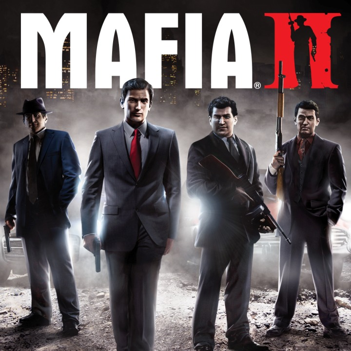

Today
Mafia 2
 Mafia II is a open world action-adventure video game developed by 2K Czech and published by 2K Games. It was released in August 2010 for the PlayStation 3, Xbox 360, and Microsoft Windows;[1][2] titled Mafia II: Director's Cut was released by Feral Interactive in December 2011.[3] The game is the sequel to 2002's Mafia[4] and the second game in the Mafia series. Set within the fictional Empire Bay (based on New York City), the story follows a gangster and his efforts to climb through the ranks of the Mafia crime families.
The game is played from a third-person perspective and its world is navigated on-foot or by vehicle. Players control Vito Scaletta, a war veteran who becomes caught up with the Mafia when trying to pay back his father's debts. The player character's criminal activities may incite a response from law enforcement agencies, measured by a "wanted" system that governs the aggression of their response. Development began in 2003, soon after the release of the first Mafia game. At release, Mafia II received generally positive reviews from critics, with praise particularly directed at the story, though the linear open world design was criticized.
Producer(s) Lukáš Kure
Designer(s)
Pavel Brzák
Josef Vašek
Jirí Matouš
Jirí Rezác
Daniel Vávra
Programmer(s)
Laurent Gorga
Michal Janácek
Dan Doležel
Artist(s) Roman Hladík
Writer(s)
Jack Scalici
Daniel Vávra
Composer(s)
Matúš Široký
Adam Kuruc
Series Mafia
Platform(s)
Mobile Phone
Microsoft Windows
PlayStation 3
Xbox 360
Mac OS X
Release Microsoft Windows, PlayStation 3, Xbox 360
NA: 24 August 2010
AU: 26 August 2010
EU: 27 August 2010
Mac OS X
WW: 1 December 2011
Genre(s) Action-adventure
Mode(s) Single-player
Mafia II PC System Requirements
Operating System: Microsoft Windows XP (SP2 or later) / Windows Vista / Windows 7.
Processor: Pentium D 3Ghz or AMD Athlon 64 X2 3600+ (Dual core) or higher.
RAM: 1.5 GB.
Video Card: nVidia GeForce 8600 / ATI HD2600 Pro or better.
Hard Disc Space: 8 GB.
Sound Card: 100% DirectX 9.0c compatible sound card.
Screenshots-
Here are the download links in 4 Parts
3 Are of 1GB Each and 4th 28MB-
Part2.rar
Part3.rar
Part4.rar